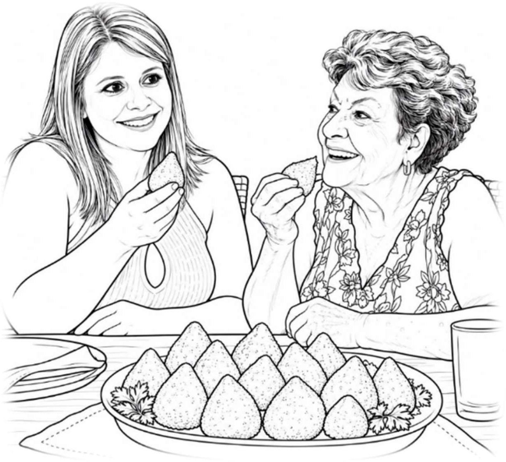

Herança de Família: As Coxinhas da Zelinda

Receita tradicional da família, preparada com o carinho e o tempero especial de Zelinda, para continuar passando de geração em geração.
Letícia, esposa do neto Carlos Eduardo, quis aprender o segredo da massa de coxinha da avó. Afinal, há receitas que conquistam pelo sabor, mas se tornam ainda mais preciosas por tudo o que representam. Aprender a prepará-las é também uma maneira de preservar as lembranças, manter vivas as tradições e levar adiante um pedacinho da história da família.
Na cozinha de Zelinda, o preparo começa com ingredientes simples e exige atenção ao ponto da massa, ao recheio bem temperado e à modelagem de cada coxinha. São etapas que pedem prática e cuidado, daqueles conhecimentos que nem sempre se aprendem apenas lendo uma receita: é preciso observar, experimentar e acompanhar quem já conhece o caminho.
Ao aprender com a avó, Letícia leva consigo mais do que o modo de fazer. Leva um saber construído ao longo dos anos, que poderá compartilhar com as próximas gerações.
Porque algumas heranças não cabem em caixas nem precisam de documentos. Permanecem nas mãos que ensinam, nas receitas que atravessam o tempo e no prazer de reunir a família em torno da mesa.